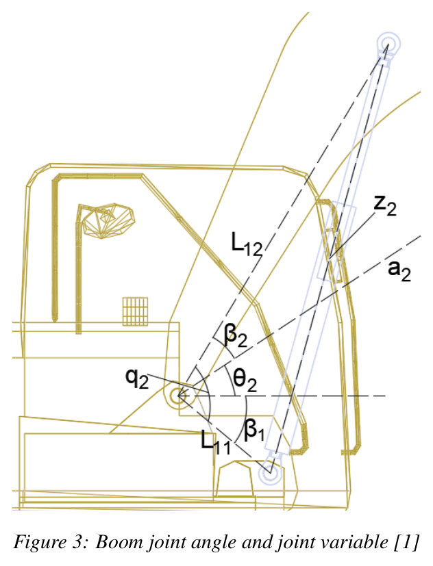
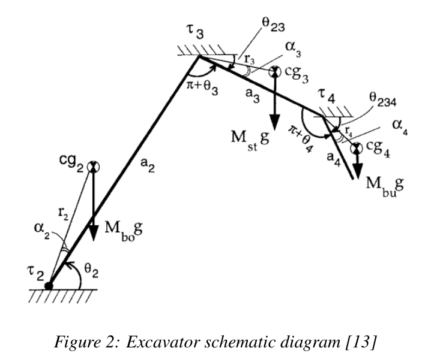
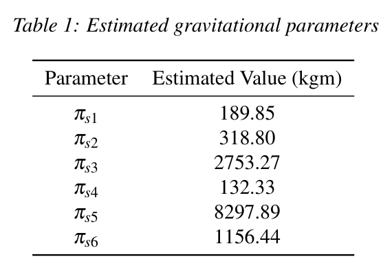
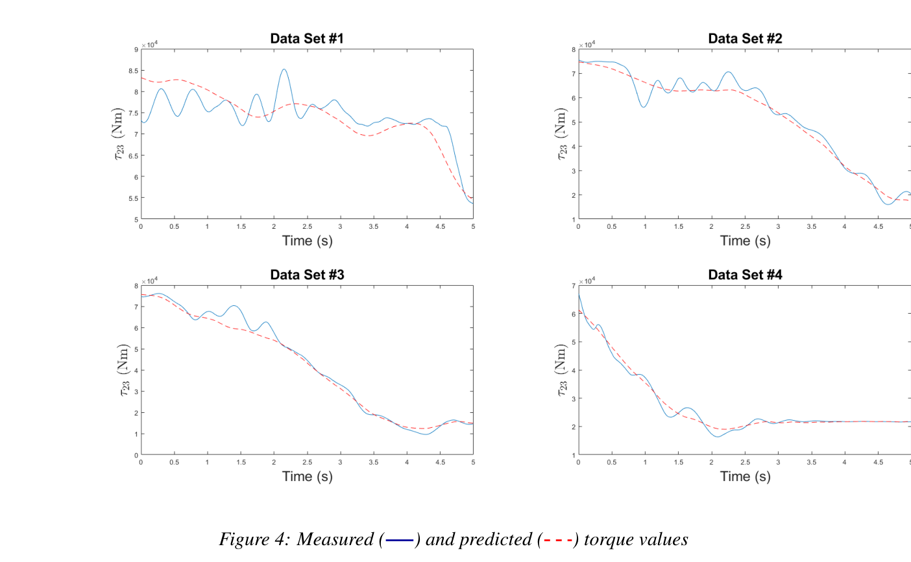

저울 없이, 작업을 끊지 않고
굴착기가 퍼 올린 흙을 덤프트럭에 실을 때 버킷마다 적재량을 알 수 있다면, 과적을 막고 생산량을 자동으로 집계할 수 있다. 문제는 실린더 압력에 흙의 무게만 담겨 있지 않다는 점이다. 붐·스틱·버킷 자체의 무게와 관성도 같은 압력 신호를 만든다.
따라서 먼저 알아야 할 것은 “이 자세와 움직임에서 빈 버킷이라면 얼마의 토크가 필요한가?”다. 연구는 제조사 물성 자료 대신 실측 데이터에서 이 기준 모델을 식별한다.
| 접근 | 한계와 과제 |
|---|---|
| 정지 자세 계량 | 측정을 위해 작업 흐름이 끊기고, 정지 마찰이 압력에 남아 오차를 만든다. |
| 휠로더 동적 계량 | Hindman(2008), Ballaire(2015) 등의 접근을 굴착기의 3관절 구조에 그대로 적용하기 어렵다. |
| 소형 굴착기 식별 | Tafazoli(1996) 등과 비교할 때, 큰 기체에서는 정지 마찰의 영향을 더 주의해서 다뤄야 한다. |
연구의 기여는 토크식을 분리된 선형 회귀 형태로 정리하고, 같은 기체에서 정적·동적 모델을 비교했다는 데 있다. 특히 붐 토크와 스틱 토크의 차이 τ₂₃ = τ₂ − τ₃를 유용한 계량 신호로 선택한다.
압력은 힘이 되고,
기하를 거쳐 토크가 된다
| 항목 | 설정 |
|---|---|
| 시험 기체 | Komatsu PC138US-8, 약 13 t |
| 말단 장치 | 버킷 + 틸트로테이터 질량 750 kg |
| 각도·운동 측정 | 캐빈·붐·스틱·버킷 도그본의 IMU 4개, 200 Hz |
| 압력 측정 | 실린더 3개 × 양쪽 챔버, 총 6채널, 200 Hz |
| 모델 범위 | 캐빈 고정, 수직면 3관절. 틸트로테이터는 작동하지 않는 오프셋으로 취급. |
양쪽 챔버의 압력에 각 유효 면적을 곱한 뒤 차를 구한다.
실린더 길이와 관절각의 관계에서 기계적 이득을 계산한다.
실측 토크와 무부하 예측 토크의 차이를 하중으로 환산한다.
P는 압력, A는 챔버의 유효 면적, z는 실린더 길이, θ는 관절각이다.

질량을 하나씩 구하지 않아도
중력 토크는 예측할 수 있다
정지 상태를 설명하는 모델에는 중력 항만 둔다. 이때 토크에 나타나는 질량과 무게중심의 조합을 여섯 개의 묶음 파라미터로 정리하면, 비선형처럼 보이던 물성 추정 문제를 선형 회귀로 풀 수 있다. 실제 측정값에 남는 마찰은 이 모델에 포함되지 않는다.

- πs1 = Mbur₄ cos α₄
- πs2 = Mbur₄ sin α₄
- πs3 = Mbua₃ + Mstr₃ cos α₃
- πs4 = Mstr₃ sin α₃
- πs5 = (Mbu + Mst)a₂ + Mbor₂ cos α₂
- πs6 = Mbor₂ sin α₂
bo·st·bu는 각각 붐·스틱·버킷을 뜻한다. aᵢ는 알려진 링크 길이, Θ는 링크 각도 모음이다. 모든 중력 묶음 파라미터의 단위는 kg·m이다.
여러 자세의 측정값을 쌓으면 최소제곱으로 파라미터를 구할 수 있다. 중력가속도의 포함 여부를 명확히 하기 위해 아래에서는 설계행렬을 X = gY로 쓴다.
여러 자세의 행을 쌓은 X가 충분한 열 계수를 가질 때의 표현이다. 정적 식의 g를 X에 포함해 표기를 통일했다.
38개 자세로 학습하고, 19개로 검증하다

| 예측 신호 | 의미 | MAPE |
|---|---|---|
| τ₄ | 버킷 토크 | 40.98% |
| τ₃₄ | 스틱 − 버킷 토크 | 10.25% |
| τ₂₃ | 붐 − 스틱 토크 | 8.31% |
버킷 토크의 예측 오차가 가장 컸다. 연구에서는 버킷 압력이 작아 정지 마찰의 상대적 영향이 커지는 점으로 설명한다. 이후 적재량 추정에는 가장 정확했던 τ₂₃를 사용한다.
토크의 차이를 무게로 바꾸면
L은 적재 상태의 실측값, NL은 같은 자세에서 무부하 모델이 예측한 값이다.
| 기준 하중 | 자세 수 | MAPE | 표준편차 |
|---|---|---|---|
| 250 kg | 37 | 13.98% | 13.56% |
| 500 kg | 42 | 9.42% | 6.78% |
정지 마찰의 누락, 작업 공간 일부에 치우친 학습 자세, 콘크리트 블록의 불균일한 하중 위치가 오차 원인으로 제시된다. 멈춰 있다는 사실만으로 계량 조건이 좋아지는 것은 아니다.
움직임을 설명하는 데
관성 묶음 세 개를 더한다
움직이는 링크에는 중력뿐 아니라 관성·원심·코리올리 항이 작용한다. 이 항들을 포함해도 모델은 파라미터에 대해 선형으로 정리된다. 전체 3관절 모델은 3×9 회귀행렬과 파라미터 9개로 표현된다.
- πd1 = Ibu + Mbur₄²
- πd2 = Ist + Mstr₃² + Mbua₃²
- πd3 = Ibo + Mbor₂² + (Mst + Mbu)a₂²
I는 링크 무게중심 기준 관성모멘트다. 동적 회귀행렬에는 중력 항도 함께 포함된다.
가속도는 센서 대신 스플라인에서
각가속도를 직접 측정하지 못했기 때문에 각도 시계열에 매끄러운 스플라인을 적합하고 미분했다. 스플라인에서 얻은 각속도와 IMU 각속도의 RMSE는 붐 0.33, 스틱 0.35, 버킷 0.34 °/s였다. 이는 각속도 일치도를 보여주는 결과이며, 각가속도의 정확도나 실시간 구현을 직접 입증하는 값은 아니다.
자유공간 궤적 5세트 중 1세트의 2,000개 샘플로 추정했다.
적재량 오차가 아니라 무부하 토크 모델의 검증 지표다.
| 파라미터 | 추정값 | 단위 |
|---|---|---|
| πd3 | 28,827.71 | kg·m² |
| πs1 | 298.04 | kg·m |
| πs2 | 592.86 | kg·m |
| πs3 | 8,228.37 | kg·m |
| πs4 | 2,571.05 | kg·m |
| πs5 | 8,927.32 | kg·m |
| πs6 | 1,386.54 | kg·m |
추정값은 모두 양수였으며 정적 식별값과는 달랐다. 노트는 이 차이를 정지 마찰을 모델에 포함하지 않은 영향과 연결한다. 다만 값이 양수라는 사실만으로 모델의 물리적 타당성이 모두 검증되는 것은 아니다.

정확도를 바꾼 것은
‘어느 구간을 읽는가’였다
동적 적재량 추정에서는 버킷 무게중심이 하중에 따라 변하지 않는다고 가정한다. τ₂₃ 모델의 Mbu를 Mbu + M̂로 바꾸고, 추가된 질량 M̂에 대해 푸는 방식이다.
이 단계에서는 묶음 파라미터만으로 충분하지 않다. 버킷 무게중심의 거리 r₄와 각 α₄가 필요하므로, 연구는 이미 알고 있는 버킷·틸트로테이터 질량 750 kg을 사용해 두 값을 되돌려 구한다.
묶음 파라미터에서 개별 무게중심 정보를 복원하려면 별도의 질량 정보가 필요하다.
318 kg·618 kg, 각각 5세트의 비교
| 사용한 데이터 구간 | 618 kg 하중 | 318 kg 하중 |
|---|---|---|
| 링크 속도 2 °/s 이상인 5초 구간 | 0.54–1.15% | 0.26–4.62% |
| 동적 구간만 | 0.63–3.94% | 1.65–9.86% |
| 정지 구간을 포함한 전체 | 0.14–17.39% | 5.15–12.19% |
범위는 해당 조건에서 보고된 실험 결과다. 앞 절의 토크 예측 MAPE와는 측정 대상이 다르며, 정적 계량 실험과 기준 하중도 다르다.
계량을 위해 멈추는 순간,
정지 마찰이 다시 측정에 들어온다.
정지 구간을 포함하면 일부 시험에서 오차가 크게 늘어난다. 연구가 시사하는 것은 운동 중 계량의 가능성과 함께, 계량에 적합한 구간을 고르는 로직의 중요성이다.
실험실의 가능성과
현장 계량 사이에 남은 것
| 현재 한계 | 실용화에 주는 의미 |
|---|---|
| 마찰 모델 부재 | 데이터에 남은 마찰이 특히 정지 구간을 오염시킨다. 마찰 보상 또는 계량 구간 선별이 중요하다. |
| 무게중심 고정 가정 | 콘크리트 블록의 위치가 가정과 어긋날 수 있다. 실제 적재물에서도 분포 변화의 영향을 확인해야 한다. |
| 각가속도의 후처리 | 스플라인 미분에 의존한 결과다. 실시간 계량을 위해서는 온라인에서 쓸 수 있는 가속도 측정·추정 방법이 필요하다. |
| 수직면 3관절 한정 | 캐빈 선회나 틸트로테이터 동작을 포함한 작업 정확도는 이 모델의 검증 범위 밖이다. |
향후 방향으로는 각가속도 측정을 통한 실시간 구현과 크레인 등 다른 기계로의 확장이 제시된다. 현장 적용 관점에서는 모델 식별만큼 센서 신호의 품질, 적재물 분포, 유효한 계량 자세·구간을 함께 설계하는 일이 중요하다.
수식에서 읽을 수 있는 추가 조건도 있다. 정적 추정식의 분모 g a₂ cos θ₂가 작아지는 자세에서는 같은 토크 오차가 더 큰 질량 오차로 증폭될 수 있다. 이는 식에 근거한 해석이며, 별도의 실험 결과를 뜻하지 않는다.
HR35에 가져갈 것은
숫자보다 검증 방법이다
제공된 노트에 따르면 HR35도 링크 각도와 실린더 양쪽 압력을 사용한다. 센서 구성의 공통점은 이 접근을 검토할 근거가 된다. 다만 이 연구의 센서는 IMU이고 HR35는 20 Hz 경사계이므로, 동적 신호의 품질과 미분 가능성은 별도로 판단해야 한다.
-
압력 count를 물리 단위로 보정한다
HR35 압력이 아직 count 단위라면 bar 또는 Pa 환산이 먼저다. 압력·면적·길이의 단위를 맞춰야 토크 모델과 비교할 수 있다.
-
디지털 트윈을 묶음 파라미터로 비교한다
트윈의 M·r·α에서 중력 묶음 6개를 계산하고 실차 식별값과 대조한다. 관성 정보까지 포함하면 6+3 구조로 모델을 점검할 수 있다.
-
τ₂₃를 우선 후보로 검증한다
버킷 축의 작은 압력 신호에 마찰이 크게 작용했다는 결과는 참고할 만하다. HR35에서도 τ₂₃와 다른 토크 신호의 검증 오차를 비교한 뒤 선택한다.
-
2 °/s를 초기 시험 조건으로 둔다
바로 고정할 계량 기준보다는 검증할 출발점이다. HR35의 속도·자세별 오차를 확인해 계량 구간의 문턱을 정한다.
-
20 Hz 각도 신호의 미분 문제를 먼저 푼다
각가속도 추정은 특히 민감할 수 있다. 원 노트는 Werner(2025)의 IMU 가속도 활용과 ISARC(2002)의 여과 회귀를 대안으로 언급하며, 두 접근은 원문을 확인한 뒤 비교할 필요가 있다.
-
버킷 실측 질량을 확보한다
같은 방식으로 r₄·α₄를 복원하려면 버킷 질량이 필요하다. 노트의 ‘실차 자료 요청 C 항목’과 연결되는 선행 자료다.
먼저 빈 기계의 힘을 배우고,
그다음 하중을 읽는다
이 연구의 유용한 발상은 모든 질량과 무게중심을 개별적으로 알아내는 대신, 토크를 예측하는 데 필요한 조합을 데이터에서 찾는 것이다. 그 기준이 생기면 실측 토크와의 차이를 적재량으로 해석할 수 있다.
낮은 오차는 모델 하나만의 성과가 아니다. 마찰의 영향이 큰 구간을 구분하고, 모델의 가정이 잘 맞는 움직임을 선택한 결과다. 현장으로 가져갈 다음 질문은 분명하다. 우리 기계에서는 어느 자세와 움직임에서 하중 신호를 가장 믿을 수 있는가?
출처와 읽기 안내
Mehmet Ferlibas · Reza Ghabcheloo
Tampere University, Finland · 2021
17th Scandinavian International Conference on Fluid Power (SICFP’21). Linköping Electronic Conference Proceedings, 182.
- 이 글은 제공된 Obsidian 논문 요약 노트를 바탕으로 재구성했다. 본문 수치·실험 조건·식 번호는 해당 노트에 따른다. 원 논문을 별도로 대조한 검증 보고서는 아니다.
- 그림 1·3·2·4와 표 1 이미지는 노트에 포함된 원 논문 도판이다. 번호는 원 논문 체계를 유지했다.
- MAPE는 평균 절대 백분율 오차를 뜻한다. 무부하 토크 예측 오차와 적재량 추정 오차는 서로 다른 지표이므로 구분해 읽어야 한다. 동적 적재량 표는 노트의 ‘오차’ 표기를 유지했다.
- 정적 최소제곱식에서는 중력가속도 g를 포함하는 설계행렬 X를 정의해 표기를 통일했다. 수식의 τ는 관절 토크, π는 묶음 파라미터다.
- HR35 절은 노트 작성자의 적용 의견이다. Werner(2025), ISARC(2002) 및 배경 연구는 제공된 노트에 완전한 서지정보가 없어 별도 참고문헌으로 확장하지 않았다.
- 강조 인용문과 마지막 공유 문장은 연구 내용을 풀어 쓴 편집 문장이며 논문 저자의 직접 인용이 아니다.